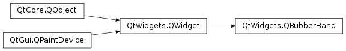

QRubberBand¶
Synopsis¶
Functions¶
- def
initStyleOption(option) - def
shape()
Detailed Description¶
The
PySide2.QtWidgets.QRubberBandclass provides a rectangle or line that can indicate a selection or a boundary.A rubber band is often used to show a new bounding area (as in a
PySide2.QtWidgets.QSplitteror aPySide2.QtWidgets.QDockWidgetthat is undocking). Historically this has been implemented using aPySide2.QtGui.QPainterand XOR, but this approach doesn’t always work properly since rendering can happen in the window below the rubber band, but before the rubber band has been “erased”.You can create a
PySide2.QtWidgets.QRubberBandwhenever you need to render a rubber band around a given area (or to represent a single line), then callPySide2.QtWidgets.QRubberBand.setGeometry(),PySide2.QtWidgets.QRubberBand.move()orPySide2.QtWidgets.QRubberBand.resize()to position and size it. A common pattern is to do this in conjunction with mouse events. For example:class Widget: def mousePressEvent(self, event): origin = event.pos() if not self.rubberBand: self.rubberBand = QRubberBand(QRubberBand.Rectangle, self) rubberBand.setGeometry(QRect(origin, QSize())) rubberBand.show() def mouseMoveEvent(self, event): rubberBand.setGeometry(QRect(origin, event.pos()).normalized()) def mouseReleaseEvent(self, event): rubberBand.hide() # determine selection, for example using QRect.intersects() # and QRect.contains().If you pass a parent to
PySide2.QtWidgets.QRubberBand‘s constructor, the rubber band will display only inside its parent, but stays on top of other child widgets. If no parent is passed,PySide2.QtWidgets.QRubberBandwill act as a top-level widget.Call
PySide2.QtWidgets.QWidget.show()to make the rubber band visible; also when the rubber band is not a top-level. Hiding or destroying the widget will make the rubber band disappear. The rubber band can be aRectangleor aLine(vertical or horizontal), depending on thePySide2.QtWidgets.QRubberBand.shape()it was given when constructed.
-
class
PySide2.QtWidgets.QRubberBand(arg__1[, parent=nullptr])¶ Parameters: - arg__1 –
PySide2.QtWidgets.QRubberBand.Shape - parent –
PySide2.QtWidgets.QWidget
Constructs a rubber band of shape
s, with parentp.By default a rectangular rubber band (
sisRectangle) will use a mask, so that a small border of the rectangle is all that is visible. Some styles (e.g., native macOS ) will change this and callQWidget.setWindowOpacity()to make a semi-transparent filled selection rectangle.- arg__1 –
-
PySide2.QtWidgets.QRubberBand.Shape¶ This enum specifies what shape a
PySide2.QtWidgets.QRubberBandshould have. This is a drawing hint that is passed down to the style system, and can be interpreted by eachPySide2.QtWidgets.QStyle.Constant Description QRubberBand.Line A PySide2.QtWidgets.QRubberBandcan represent a vertical or horizontal line. Geometry is still given inPySide2.QtWidgets.QWidget.rect()and the line will fill the given geometry on most styles.QRubberBand.Rectangle A PySide2.QtWidgets.QRubberBandcan represent a rectangle. Some styles will interpret this as a filled (often semi-transparent) rectangle, or a rectangular outline.
-
PySide2.QtWidgets.QRubberBand.initStyleOption(option)¶ Parameters: option – PySide2.QtWidgets.QStyleOptionRubberBandInitialize
optionwith the values from thisPySide2.QtWidgets.QRubberBand. This method is useful for subclasses when they need aPySide2.QtWidgets.QStyleOptionRubberBand, but don’t want to fill in all the information themselves.See also
-
PySide2.QtWidgets.QRubberBand.shape()¶ Return type: PySide2.QtWidgets.QRubberBand.ShapeReturns the shape of this rubber band. The shape can only be set upon construction.
© 2018 The Qt Company Ltd. Documentation contributions included herein are the copyrights of their respective owners. The documentation provided herein is licensed under the terms of the GNU Free Documentation License version 1.3 as published by the Free Software Foundation. Qt and respective logos are trademarks of The Qt Company Ltd. in Finland and/or other countries worldwide. All other trademarks are property of their respective owners.